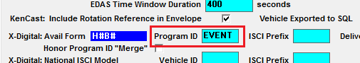

Replacing the Program Code
When using the Hour/Break avail form, a feature exists that makes it possible to replace the program code and cue on the export output with text specified in the Event ID field on the Programming Library for the avail that the spots come from. Note: this feature is for the Hour/Break avail form only. It is not supported for vehicles using the Hour/Break/Position avail form or the ISCI avail form.
Instructions
This option is only available for vehicles set to the HB (Hour/Break) avail form that are non-sports vehicles and should only be used when required.
1. On the Vehicle Options screen Interface tab, enter the word "EVENT" (no quotes) in the Program ID field, then press Save.

2. Edit the Event ID field for each avail on the Programming Library. The Event ID should consist of the Program Code (8 alpha-numeric characters or less), a colon, followed by the Cue (10 alpha-numeric characters or less - an X-Digital limitation). For example, AG:Headlines1. With this example, the Program Code is “AG” and the Cue is “Headlines1”.
Below is an example of how this break will appear on the X-Digital export, with the Program Code "AG" replacing the Program ID from Vehicle Options, and the Cue "Headlines1" replacing the Hour/Break number:
<ProgramCode>AG</ProgramCode>
<ProgramName>TestVehicle</ProgramName>
<Cue>Headlines1</Cue>
<StartDate>12/21/2015 00:00:00</StartDate>
<EndDate>12/21/2015 23:59:59</EndDate>
<TransmissionID>20151221</TransmissionID>
<SpotSet duration="60">
<ISCI>ACD-1004-30</ISCI>
<ISCI>CC-5552-30</ISCI>
</SpotSet>
It’s also possible for there to be multiple sets of program codes and cues to be defined for a single avail, so that the spots from a single break will be output on the export multiple times, once for each set of program codes and cues. To use this feature, individual program code/cue combinations must be separated by a tilde character. There can be up to nine sets of program codes/cues for a single break.
For example, if a break has "AG:Headlines1~AR:Headlines2" defined as the event ID, and there's an AC Delco and Sears spot in the break, the AC Delco and Sears spots will appear on the export first with a program code of AG and a cue of Headlines1, then the same spots will be listed a second time but with a program code of AR and with a cue of Headlines2.
XML example, with the program codes and cues highlighted:
<Insert>
<ProgramCode>AG</ProgramCode>
<ProgramName>Billy Crystal</ProgramName>
<Cue>Headlines1</Cue>
<StartDate>12/26/2015 00:00:00</StartDate>
<EndDate>12/26/2015 23:59:59</EndDate>
<TransmissionID>20151226</TransmissionID>
<SpotSet duration="60">
<ISCI>ACDELCO1</ISCI>
<ISCI>SEARS1</ISCI>
</SpotSet>
<Sites>
<Site SiteID = "39294" UnitID="201512260100200001">
</Site>
</Sites>
</Insert>
<Insert>
<ProgramCode>AR</ProgramCode>
<ProgramName>Billy Crystal</ProgramName>
<Cue>Headlines2</Cue>
<StartDate>12/26/2015 00:00:00</StartDate>
<EndDate>12/26/2015 23:59:59</EndDate>
<TransmissionID>20151226</TransmissionID>
<SpotSet duration="60">
<ISCI>ACDELCO1</ISCI>
<ISCI>SEARS1</ISCI>
</SpotSet>
<Sites>
<Site SiteID = "39294" UnitID="201512260110200001">
</Site>
</Sites>
</Insert>
When configuring Event IDs, an avail can be given an Event ID of “-XDS” (no quotes, not case sensitive) to cause that avail to be skipped by the X-Digital export. (This applies to event types of “Contract Avails” only.)
To ensure that valid Event IDs will be saved, when tabbing to the next line, or when saving the programming library, the system will warn the user if an invalid Event ID has been entered and give the line number and reason. Each Contract Avail Event ID must have one tilde less than the number of colons (or be set to “-XDS” as described above). It also checks that the Event ID is not blank. (These tests only occur when the Vehicle Options screen Program ID is set to "EVENT" for H#B# avail form vehicles only.) These warnings must be resolved before the system will allow the library to be saved.
3. After defining all the Event IDs as described above, save the programming library and schedule it as needed. Now when the final log is generated and the X-Digital export is run for the time period covered by the new programming, the info from the Event ID will be used for the Program Code and Cue.
Note: if the cue value is changed in Programming after generating the X-Digital export for a given week, and the new cue value needs to be used for that vehicle/week, you must run the X-Digital export with the "Re-export all, not just new" option selected to ensure that the new cue values get exported.